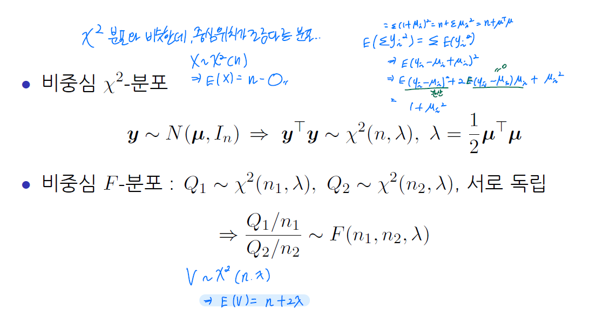

적합결여검정
- 두 변수 x와 y 사이의 함수관계가 단순회귀모형
\[y= \beta_0 + \beta_1x + \epsilon, \epsilon \sim N(0,\sigma^2)\]
으로 표현되는 것이 적합한가의 검정방법
- 가설
\(H_0 : E(Y|X = x) = \beta_0 + \beta_1 x\)
\(H_1 : E(Y|X = x) \neq \beta_0 + \beta_1 x\)
- 제곱합분해
\(SSE = \sum_{i=1}^k \sum_{j=1}^{n_i} (y_{ij} - \hat y_i)^2\)
\(\bar y_i - \sum_{j=1}^{n_i} y_{ij} / n_i\)
- 검정
- 검정통계량
- \[F_0 = \dfrac{MSLF}{MSPE} \sim H_0 \ F(n-2 , n-k)\]
-
\(F_0\)값이 작음 –> 모형적합이 잘 되었다.
순오차평균제곱: \(MSPE = \dfrac{SSPE}{n-k}\) : 고정되어 있음. 회귀직선과 상관 없음
적합결여평균제곱: \(MSLF = \dfrac{SSLF}{k-2}\)
\(f_0 = \dfrac{MSLF}{MSPE} > F_\alpha (n-2, n-k)\)이면 귀무가설 기각
두 회귀모형의 검정
- 완전 모형(full model)
\[y_{ij} = \beta_{0i} + \beta_{1i} x_{ij} + \epsilon_{ij}\]
\[i=1,2, j= j,2, \dots, n_i\]
\[\epsilon_{ij} \sim N(0,\sigma^2)\]
모집단1: \(E(y_{1j}|x_{1j}) = \beta_{01} + \beta_{11} x_{1j}\)
모집단2: \(E(y_{2j}|x_{j2}) = \beta_{02} + \beta_{12} x_{2j}\)
혹시… \(\beta_{01} = \beta_{02}\) 아니야? \(\beta_{11} = \beta_{12}\) 아니야? 하고 가설 세움
- 가설
\[H_0 : \beta_{01} = \beta_{02} \ \text{and} \ \beta_{11} = \beta_{12}\]
\[H_1 : \beta_{01} \neq \beta_{02} \ \text{or} \ \beta_{11} \neq \beta_{12}\]
- 축소 모형(reduced model)
\[y_{ij} = \beta_0 + \beta_1 x_{ij} + \epsilon_{ij},\]
\[i=1,2, j=1,2, \dots , n_i\]
\[\epsilon_{ij} \sim N(0, \sigma^2)\]
- \(\beta_{01} = \beta_{02} = \beta_0, \beta_{11} = \beta_{12} = \beta_1\)
(Step1) 완전모형의 잔차제곱합 SSE(F)를 구한다.
\(SSE(F) = SSE_1 + SSE_2\)
\(SSE_i = \sum_{j=1}^{n_i} (y_{ij} - \hat y_{ij})^2 = \sum_{j=1}^{n_i} (y_{ij} - \hat \beta_{0i} - \hat \beta_{1i} x_{ij})^2, i=1,2\)
(Step2) 축소모형의 잔차제곱합 SSE(R)을 구한다.
\(SSE(R) = \sum_{i=1}^2 \sum_{j=1}^{n_i} (y_{ij} - \hat y_{ij})^2 = \sum_{i=1}^2 \sum_{j=1}^{n_i} (y_{ij} - \hat \beta_0 - \hat \beta_1 x_{ij})^2\)
(Step3) 검정통계량
\[F_0 = \dfrac{SSE(R) - SSE(F)}{df_R - df_F} \div \dfrac{SSE(F)}{df_F}\]
\(df_R = (n_1 - 1) + (n_2 - 1), df_F = (n_1 - 2) + (n_2 - 2)\)
\(F_0 \sim F(df_r - df_F, df_F) = F(2, n_1 + n_2 - 4)\)
(Step4) 유의수준 \(\alpha\)에서 \(F_0 > F_\alpha (2, n_1 + n_2 - 4)\)이면 \(H_0\)기각
두 기울기의 비교
- 기울기 비교에 대한 가설
\[H_0 : \beta_{11} = \beta_{12}\]
\[H_1: \beta_{11} \neq \beta_{12}\]
- 검정통계량
\[t_0 = \dfrac{\hat \beta_{11} - \hat \beta_{12}}{\sqrt{\widehat{Var}(\hat \beta_{11} - \hat \beta_{12})}} \sim H_0 \ t((n_1 - 2) + (n_2 -2))\]
- 두 표본이 독립이라고 가정하면
\[Var(\hat \beta_{11} - \hat \beta_{12}) = Var(\hat \beta_{11}) + Var(\hat \beta_{12})\]
\[=\dfrac{\sigma^2}{\sum(x_{1j} - \bar x_1)^2} + \dfrac{\sigma^2}{\sum(x_{2j}-\bar x_2)^2}=\dfrac{\sigma^2}{S_{xx}}+\dfrac{\sigma^2}{S_{xx^*}}\]
\[\widehat{Var}(\hat \beta_{11} - \hat \beta_{12}) = MSE(F) \left[ \dfrac{1}{\sum (x_{1j} - \bar x_1)^2} + \dfrac{1}{\sum(x_{2j} - \bar x_2)^2} \right]\]
Weighted Regression
Quardratic form
- y의 이차형식(quadratic form)
\[y^T A y = \sum_{i=1}^n a_{ij} y_i y_j = \sum_{i=1}^n a_{ii} y_i^2 + 2 \sum_{i=1}^{n-1} \sum_{j=i+1}^n a_{ii} y_i y_j\]
\(y^T = (y_1, y_2, \dots, y_n) : n \times 1\) vector
\(A = (a_{ij})\): 이차형식 \(y^T A y\)의 계수, \(n \times n\) symmetric matrix
- \(0_n\) 이 아닌 모든 벡터 \(y\)에 대하여
\(y^T A y > 0 \rightarrow A\): 양정치(positive definite) 행렬
\(y^T A y \geq 0 \rightarrow A\): 양반정치(positive definite) 행렬
\(y^T A y < 0 \rightarrow A\): 음정치(positive definite) 행렬
\(y^T A y \leq 0 \rightarrow A\): 음반정치(positive definite) 행렬
Multivariate normal distribution
비중심 \(\chi^2\)분포

distribution of quadratic form
- A: 멱등행렬(idempotent matrix)
\[AA=A\]
<정리>
1.29 멱등행렬의 고유값은 또는 1이다
1.30 행렬 A가 rank(A) = k 인 멱등행렬일 때는
\[P^T AP = E_k\]
를 만족하는 직교행렬 P가 존재한다. 여기서 \(E_k\)는 대각 원소 중 \(k\)개가 1, 나머지는 0인 대각행렬을 의미
1.31
뒤에 더 있음.. (pdf)